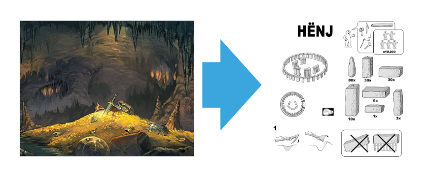

The Freedom of IaC
Infrastructure as Code
- Smooth Deployments
- Cookie-cutter Environments
- Secure Operations
- -> Happy Customers
Adam Krieger
- Nerd (1986)
- Dev (2007)
- Online (2015)
- Cloud
- DevOps
Automation
of repetitive tasks
Documentation
of complex knowledge

Abstraction
of product from context
Security
via role-based access control
Principles of IaC
- Automate Repetitive Tasks
- Document Complex Knowledge
- Abstact Product from Context
- Secure with RBAC
Ansible
- Agentless
- python
- YML & Jinja
- 2000+ modules
- Variables
- ansible-vault
AWS CloudFormation
- Provisioning
- Resource Stacks
- YML
- Parameters
- Declarative
- Vendor-Supported
AWS CLI
- Imperative
- Vendor-Supported
bash, python
Agenda
- Toolset Overview
- IaC Deep Dive (x4)
- - Principle
- - Practice
- - Code Sample
Toolset Overview: Ansible
Ansible
- Agentless Automation Toolset
- Keyword:
- Inventory (hosts)
- Playbooks (automation)
- Roles (services)
- Tasks
- Variables
Ansible Playbooks
- yml, j2 in
- ssh, python out
Ansible Tasks
- simple: copy, apt, bash
- complex: cloud, database, monitoring
Toolset Overview: CloudFormation
Cloudformation
- AWS Resource Provisioning
-
Keywords:
- Templates (yml)
- Resources
- Parameters
- Mappings
AWS Interfaces
- CLI
- CloudFormation
- Web Console
- SDKs
CloudFormation Templates
- yml in
- aws resources out
AWS Resources
- resource: ec2 instance, rds database
- product: lambda functions, fargate clusters
Automation of Repeatable Tasks
- Every task must be in source control
- Complex tasks are made up of simple ones
- Highest level is Business abstraction
How to source control
- Pick something Small and Integral
- File delivery
- Service start
- Use ansible tasks, or aws resources
How to complex over simple
- Use ansible roles, playbooks
- Keep it simple, sequential
DevBusOps
- #1 criticism of DevOps is that it's not value
- Building business-facing controls negates
- Batch size can exactly match feature with very little cost
Decentralization of Complex Knowledge
- Don't reinvent the wheel
- Review regularly
- Let the code speak for itself
Don't reinvent the wheel
- Prefer OTC Solutions
- Use ansible modules
- Use vendor tools (CF)
- Put command strings in run.sh files
Review Regularly
- Code review every deployment change
- Refactor before changes to keep it tidy
Let the Code Speak
- README.md answers the most basic questions
- ./**/README.md answers more specific questions
- Filenames are like object names
- task or resource names are like function names
Separate Product from Context
- Move all environment info into variables
- Build an environment switch
- Layer/Tag environments (nonprod, load)
- Prefer immutability
Boost Security with Shared Accountability
- Implement vaults
- Use deployment roles instead of super admins
- Implement auditing and logging
Where we want to be
- 100% Automation (eliminate procedural variance)
- Handle any state (handle environmental variance)
- Practically Zero dependency sharing (reduce dependency complexity)
-> Make deployment a business process
This talk:
- Before and After
- Ansible and Cloudformation
- Obligatory Food Metaphor
- Four Keys to Good IaC
- No Silver Bullets
Where we are/were
+ Different environments for different SLAs, audiences
+ Same binary everywhere (except for mobile, embedded)
- Still have manual actions
- Assess state before deployment
Infrastructure Operations
- Provisioning (Bun)
- Installation (Burger)
- Secrets (Sauce)
- Configuration (No Pickles)
- Operation (Bite)
As Code
- Requirements
- Provision a resource
- Move files
- Find/Replace
- Run service
- Source Control
- Rebuild in case the server dies (immutability)
- Back up the 'what'
- Code Reviews
- Agree on syntax, methods
- Share knowledge
- Quality Assurance
- Same deployment method from dev to prod
- User Experience
- Ops are people too
Product!
+ Consistency
+ Speed
+ Data
+ Joy
IaC Freedoms
- Coding: Componentization of Repeatable Tasks
- Renewing SSL Certs (ansible)
- Applying Security Groups (CF)
- Source Control: Decentralization of Complex Knowledge
- Deploy logstash
- Deploy cloudfront
- Configuration Management: Segregation of Product and Context
- multiple environments
- Vaulting: Security through Shared Accountability
- RSP Handbook, mandatory vacation
- Dave becomes a contributor
- Dave's password doesn't get shared with someone who isn't Dave
- Dave cannot introduct malicious artifacts for risk of getting outted by the collective
Design Language
- Think Production First
- Prefer Idiomatic Solutions
- Prefer Immutability
- Prefer Idempotence
- Prefer Flat Structure
Case Study:
- AWS Products (DynamoDB, Route 53, S3)
- AWS Resources (RDS, EC2)
- Non-AWS Resources (VMs)
- Non-AWS Products (mongodb, logstash, docker)
What's Ansible
- host: local or remote (ssh), static or enumerated (.py)
- task: something performed on a host
- as simple as file copy
- as complex as installing a service
- role: a series of tasks that collectively describe a capability
- playbooks: a series of role and host associations
- vaults: collections of encrypted strings and/or files
Game changers:
- declarative syntax
- established templating (do what you're best at)
- agentless
What's Cloudformation
- AWS proprietary
How do these fit in with the rest of DevOps